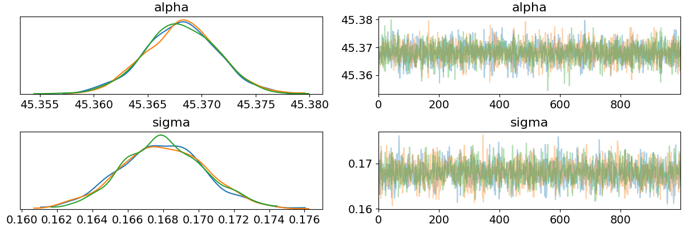
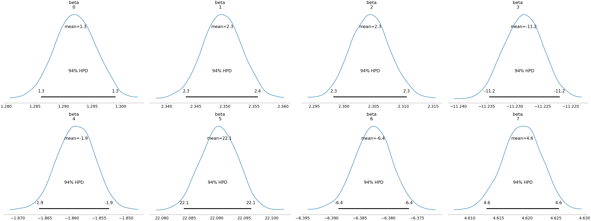

In a previous post I had a look at using pyro but found myself writing a lot more code just to have a look at the inference than to actually perform it. Fortunately, one of the arviz developers commented on the post and let me know that arviz would have helped me out with this so this post reflects my experience with it.
When I first tried arviz I actually had some problems using multiple chains, however shortly after making an issue one of the developers (ahartikainen, who originally pointed me to arviz) helped me through a simple pull request to get it fixed, which was pretty awesome!
Using the same example as before:
import torch import pyro import pyro.distributions as dist import pyro.infer.mcmc as mcmc import arviz as az torch.multiprocessing.set_sharing_strategy("file_system") pyro.set_rng_seed(42) NUM_WARMUP = 1000 NUM_SAMPLES = 1000 NUM_CHAINS = 3 N = 2500 P = 8 alpha_true = dist.Normal(42.0, 10.0).sample() beta_true = dist.Normal(torch.zeros(P), 10.0).sample() sigma_true = dist.Exponential(1.0).sample() eps = dist.Normal(0.0, sigma_true).sample([N]) x = torch.randn(N, P) y = alpha_true + x @ beta_true + eps def model(x, y): alpha = pyro.sample("alpha", dist.Normal(0.0, 100.0)) beta = pyro.sample("beta", dist.Normal(torch.zeros(P), 10.0)) sigma = pyro.sample("sigma", dist.HalfNormal(10.0)) mu = alpha + x @ beta return pyro.sample("y", dist.Normal(mu, sigma), obs=y) kernel = mcmc.NUTS(model, jit_compile=True) posterior = mcmc.MCMC(kernel, num_samples=NUM_SAMPLES, warmup_steps=NUM_WARMUP, num_chains=NUM_CHAINS, disable_progbar=True).run(x, y)
We can print some basic posterior information via:
data = az.from_pyro(posterior) summary = az.summary(data) print(summary)
| mean | sd | mc error | hpd 3% | hpd 97% | effn | rhat | |
|---|---|---|---|---|---|---|---|
| alpha | 45.37 | 0 | 0 | 45.36 | 45.37 | 3079 | 1 |
| beta[0] | 1.29 | 0 | 0 | 1.29 | 1.3 | 3048 | 1 |
| beta[1] | 2.35 | 0 | 0 | 2.34 | 2.36 | 2775 | 1 |
| beta[2] | 2.3 | 0 | 0 | 2.3 | 2.31 | 3313 | 1 |
| beta[3] | -11.23 | 0 | 0 | -11.23 | -11.22 | 2970 | 1 |
| beta[4] | -1.86 | 0 | 0 | -1.87 | -1.85 | 3294 | 1 |
| beta[5] | 22.09 | 0 | 0 | 22.08 | 22.1 | 3106 | 1 |
| beta[6] | -6.38 | 0 | 0 | -6.39 | -6.38 | 3048 | 1 |
| beta[7] | 4.62 | 0 | 0 | 4.61 | 4.63 | 3366 | 1 |
| sigma | 0.17 | 0 | 0 | 0.16 | 0.17 | 2200 | 1 |
Nice! That was a lot easier than what I did before…
There are also lots of plots we can look at:
import matplotlib.pyplot as plt az.plot_trace(data, var_names=["alpha", "sigma"]) plt.savefig("../img/arviz_trace_alpha_sigma.png") plt.close()

az.plot_joint(data, var_names=["alpha", "sigma"], kind="hexbin") plt.savefig("../img/arviz_joint_alpha_sigma.png") plt.close()
az.plot_posterior(data, var_names=["beta"]) plt.savefig("../img/arviz_posterior_beta.png") plt.close()

I've only shown a fraction of the arviz capabilities here, for more see e.g. the arviz official docs. It looks look a cool project, and I will be using it when I find myself in python.